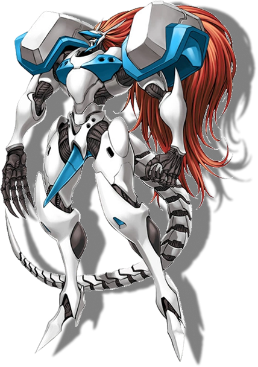
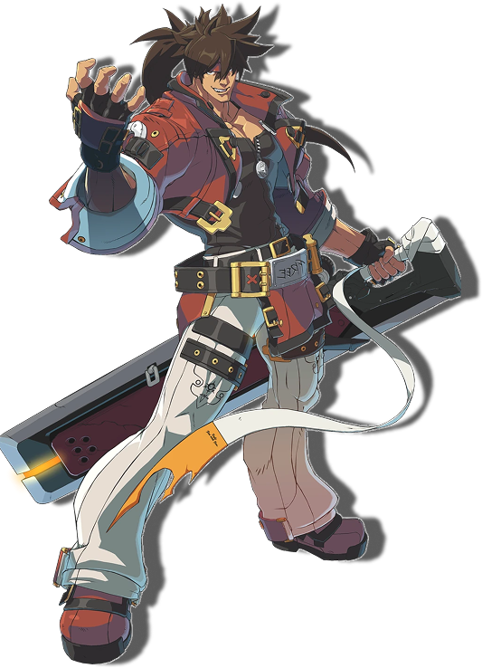
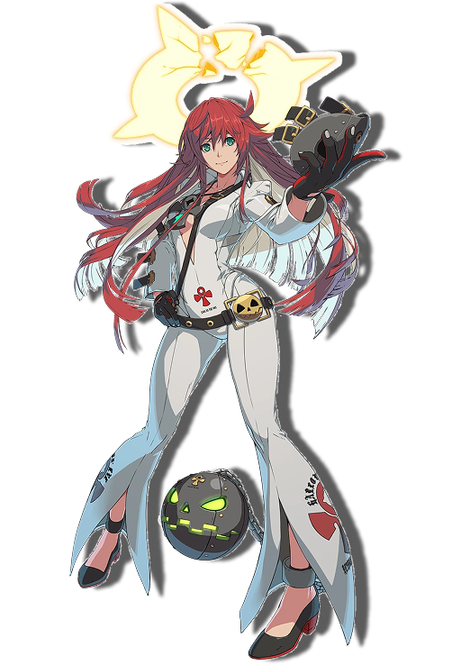
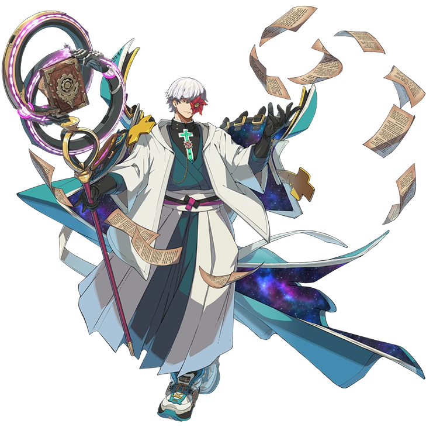
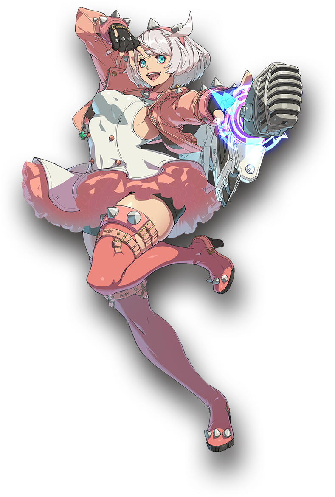

Guilty Gear revolves around the protagonist, Frederick Bulsara, also known as Sol Badguy. It is a fighting game that gained popularity with Guilty Gear: Strive in 2018, though it remained well-known through Guilty Gear Xrd Rev 2: Revelator. The series takes place in America, following an apocalyptic-level event. This moment occurs in 1999 when a mysterious prophet predicts a catastrophic event that will change humanity forever.
By the end of 1999, few people had heeded the prophet's warnings. When the predicted event happens, it causes a worldwide failure of all electronic devices capable of transmitting or receiving information. During this crisis, every device, in all languages and networks, broadcasts a cryptic message: “In a few days… humanity will crumble.” Shortly after, all electronic devices and machines stop working. Several cities are struck by natural disasters, destroying them completely. Food and water become scarce as transportation and manufacturing infrastructure collapse.
As society unravels, the prophet and the few who listened come forward with a plan to rebuild humanity without technology. They propose teaching humanity magic as a replacement for technological power. The nations study and harness magic, eventually helping humanity regain stability. By 2016, the government invested heavily in the Ecosystem Evolution Project, developed by Frederick, Aria, and " That Man. " This project aims to cure terminal diseases and potentially enhance the human body through 'gear cells." During the project, Aria develops a terminal illness, prompting Frederick and " That Man " to put her into cryostasis until completion.
However, the nations demand the research and send military forces to seize it, just as the project nears its conclusion. An accident at the lab causes Aria and “That Man” to go missing, and Frederick is presumed dead. However, he survives, transformed after being imbued with the cells being developed, becoming a "Gear." Now, he searches for Aria and “That Man.

(Big Problem)

Initially a scientist, he was straightforward and rather austere, with an unwavering sense of integrity, even at the disdain of others. After he is transformed into a gear, it brought his negative aspects to the surface. Now described as a “meathead”, he has troubles expressing himself, and when that doesn't work, he opts to use brute force instead. Preferring to work alone, he won't tolerate anyone's antics and can't be dissuaded once he's set on something.

An artificial human gear hybrid, implanted with Aria's consciousness. Her memories and identity are unstable, although that's changed as of late. Currently housing the complete “soul” of Aria, her memories are repressed by Jack-O's own memories, leaves her wondering if she's Jack-O or Aria and if she deserves to live on as Jack-O.

Creator of the Gears, public enemy number one, and scholar of The Original. Sols biggest source of anger. A mysterious man who speaks cryptically and leaves his intentions vague, resulting in discord more often than not. Caused the destruction of a nation due to the Gear “Justice” going rampant. He lives on the moon now hosting a radio show and trying to create a clone of himself.
Why I like it, and why someone should give it a go.
I enjoy the Guilty Gear series, especially the newest iteration of it. Guilty Gear Strive is the newest game in the series featuring fan favorites and even brand-new characters. I believe anyone can enjoy it, even if you're not into fighting games, as the story is very interesting.
There are deep interpersonal issues that make understanding the complexity of some characters a bit harder beyond the surface level. You'll find, as you peel back the layers on a character you find interesting, their more than just a meathead or sword-wielding guy. Not that that's anything ground-breaking, but it feels like the characters could be real people.
While I can't relate to fighting skyscraper sized monsters, I find it helpful they explore things like stripping yourself of ideals that you carry from the expectations of society, parents, or friends to find out who you truly are. Learning to express oneself without fear or shame Very few of the characters are “good” or “bad” and are more like people reacting to the hand they were dealt and trying their best to deal with it.
Even those who've committed horrible acts didn't do so for the fun of it. Those who were “evil” try to make up for it, even if they know people won't forgive them. The soundtrack is great, most fans joke it's an album that comes with a free game.

GregTheMarauder
Ranked got fixed which is a massive improvement Really what drew me in is how different much of the characters play from one another. Closest example I can think of would be like how Dhalsim plays vs the rest of the cast of SF. GGST has more of thatNot a big anime fighter fan, but this one drew me in and I really fell in love with this game for their design for character kits, especially when I saw Asuka. Character with a mana bar that is spent on spells that are prepared from 3 selectable books of spells is the kind of vision I love
Unika
I did not like fighting games until I played Guilty Peak Strive, but this game has made me love them!!!!! i'm not sure if I would say it's beginner friendly, but as a new fighting game player I had an absolute blast :3 Also the cast is filled with fun and unique characters, my personal favorite is Unika
James Mcgill Esq.
Game for gay people only